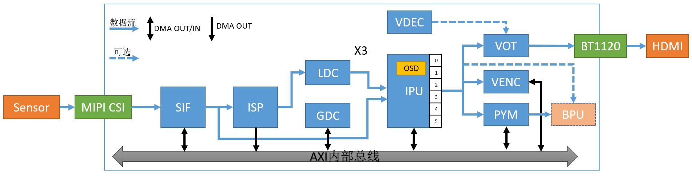
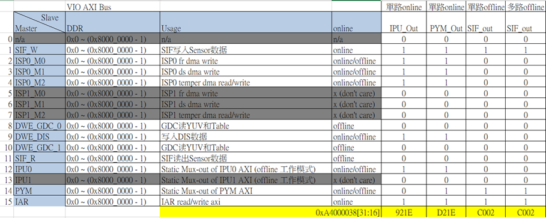
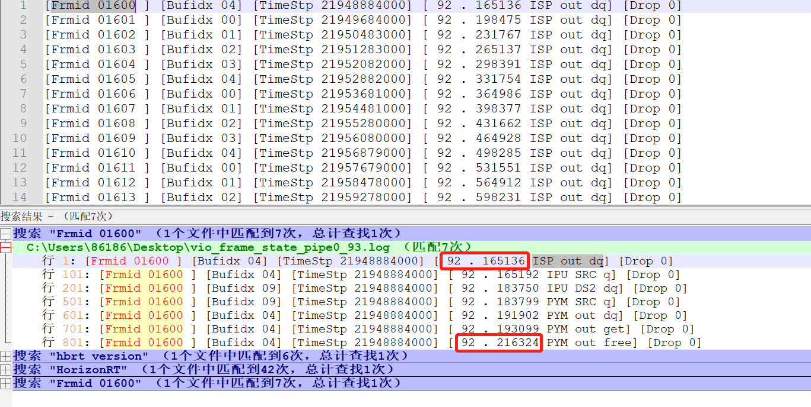

5.12. 多媒体性能调试
5.12.1. 概述
Camera是图像数据的主要外部来源，VIO部分软件是一个相对不透明的内部软件，主要面向提供内部应用软件提供相关的图像以及信息，XJ3芯片内部图像处理IP信息大致如下：

| 输入方式 | IP | 输出方式 |
|---|---|---|
| Online | MIPI | Online |
| Online/Offline | SIF | Online/Offline |
| Online | ISP | Online/Offline |
| Online | LDC | Online |
| Offline | GDC | Offline |
| Online/Offline | IPU | Online/Offline |
| Online/Offline | PYM | Offline |
注：Online 指硬件通过片内RAM交换数据，Offline指硬件通过DDR交换数据。
本章节主要描述X3芯片关于图像数据处理通路等模块在实际使用的常用场景中，根据DDR带宽和延迟进行各处理模块DDR优先级和其它一些相关参数的调整。
在DDR瞬时带宽不足时会造成视频丢帧，在帧率和丢帧这两个问题之间，可以根据本章节的描述，选择一个合适的配置值来平衡。
5.12.2. DDR Master的QoS
XJ3 各模块通过AXI接口访问DDR，XJ3有8个AXI接口，分别为AXI_0 ~ AXI_7，XJ3的模块使用AXI接口关系如下表：
| 端口号 | AXI_0 | AXI_1 | AXI_2 | AXI_3 | AXI_4 | AXI_5 | AXI_6 | AXI_7 |
|---|---|---|---|---|---|---|---|---|
| 模块名 | CPU/R5 | NOC | CNN0 | CNN1 | VIO0 | VPU/JPU | VIO1 | PERI |
AXI_4和AXI_6可配置，可以通过寄存器配置VIO子模块到AXI_4或者AXI_6，AXI_6有更高的优先级。
XJ3 VIO包括如下子模块：SIF_W、ISP0_M0、ISP0_M2、GDC0、DIS、SIF_R、IPU0、PYM、IAR。
5.12.3. AXI QOS控制
AXI Qos优先级范围0~15，值越大优先级越高。XJ3系统启动后读写QoS默认配置为0x2021100。
每个Port的优先级值通过Perf Monitor的DDR_PORT_READ/WRITE_QOS_CTRL寄存器设置，Perf Montior再通过硬件的方式设置到DDR控制器中。软件无需设置DDR控制器。
DDR QoS的值在DDR_Monitor驱动中通过Sysfs的属性文件的方式设置和查询。
可以通过all属性文件一次性设置，最低的4bit对应P0_CPU，最高4bit对应P7_PERI。
也可以通过cpu、bifdma、bpu0、bpu1、vio0、vpu、vio1、peri单独设置和查询各个端口的优先级，如下：
QoS sysfs接口
#查询读QoS：
cat /sys/bus/platform/drivers/ddr_monitor/read_qos_ctrl/all
CPU port isn't allowed to be configured in runtime.
You can run chmod +w as root for debugging purpose.
****************************************************
04032221:
P0_CPU: 1
P1_BIFDMA: 2
P2_CNN0: 2
P3_CNN1: 2
P4_VIO0: 3
P5_VPU: 0
P6_VIO1: 4
P7_PERI: 0
cat /sys/bus/platform/drivers/ddr_monitor/write_qos_ctrl/all
****************************************************
CPU port isn't allowed to be configured in runtime.
You can run chmod +w as root for debugging purpose.
****************************************************
04032211:
P0_CPU: 1
P1_BIFDMA: 1
P2_CNN0: 2
P3_CNN1: 2
P4_VIO0: 3
P5_VPU: 0
P6_VIO1: 4
P7_PERI: 0
#设置bifdma读QoS为2：
echo 2 > /sys/bus/platform/drivers/ddr_monitor/read_qos_ctrl/bifdma
#设置bpu0读QoS为1：
echo 1 > /sys/bus/platform/drivers/ddr_monitor/read_qos_ctrl/bpu0
#设置bpu1读QoS为1：
echo 1 > /sys/bus/platform/drivers/ddr_monitor/read_qos_ctrl/bpu1
#设置vio0读QoS为2：
echo 2 > /sys/bus/platform/drivers/ddr_monitor/read_qos_ctrl/vio0
#设置vpu读QoS为0：
echo 0 > /sys/bus/platform/drivers/ddr_monitor/read_qos_ctrl/vpu
#设置vio1读QoS为3：
echo 3 > /sys/bus/platform/drivers/ddr_monitor/read_qos_ctrl/vio1
#设置peri读QoS为0：
echo 0 > /sys/bus/platform/drivers/ddr_monitor/read_qos_ctrl/peri
#设置bifdma写QoS为2：
echo 2 > /sys/bus/platform/drivers/ddr_monitor/write_qos_ctrl/bifdma
#设置bpu0写QoS为1：
echo 1 > /sys/bus/platform/drivers/ddr_monitor/write_qos_ctrl/bpu0
#设置bpu1写QoS为1：
echo 1 > /sys/bus/platform/drivers/ddr_monitor/write_qos_ctrl/bpu1
#设置vio0写QoS为2：
echo 2 > /sys/bus/platform/drivers/ddr_monitor/write_qos_ctrl/vio0
#设置vpu写QoS为0：
echo 0 > /sys/bus/platform/drivers/ddr_monitor/write_qos_ctrl/vpu
#设置vio1写QoS为3：
echo 3 > /sys/bus/platform/drivers/ddr_monitor/write_qos_ctrl/vio1
#设置peri写QoS为0：
echo 0 > /sys/bus/platform/drivers/ddr_monitor/write_qos_ctrl/peri
5.12.4. VIO子模块配置
XJ3 VIO子模块包括SIF_W、ISP0_M0、ISP0_M2、GDC0、DIS、SIF_R、IPU0、PYM、IAR，分别对应SIF模块写、ISP写、ISP Temper读写、GDC0读写、DIS写、SIF模块读、IPU0模块读写、PYM模块读写、IAR模块读写。
可以通过AXIBUS寄存器将这些子模块配置到VIO0或者VIO1上，XJ3系统启动后默认配置IAR和SIF_W到VIO1，其余模块配置到VIO0。AXIBUS寄存器bit31~bit16对应子模块如下图：

其中灰色部分模块不存在，对应bit设置为1，该子模块被配置到VIO1上，否则配置到VIO0上。可以通过all属性一次性配置或查询，查询返回vio1上的模块，别的模块在vio0上。也可以通过子模块属性单独配置或查询。
AXIBUS sys接口
# 设置，值为1配置到vio1，值为0配置到vio0
echo 0xc0020000 > /sys/bus/platform/drivers/ddr_monitor/axibus_ctrl/all
echo 0 > /sys/bus/platform/drivers/ddr_monitor/axibus_ctrl/sifr
echo 0 > /sys/bus/platform/drivers/ddr_monitor/axibus_ctrl/isp0m0
echo 0 > /sys/bus/platform/drivers/ddr_monitor/axibus_ctrl/isp0m1
echo 0 > /sys/bus/platform/drivers/ddr_monitor/axibus_ctrl/isp0m2
echo 0 > /sys/bus/platform/drivers/ddr_monitor/axibus_ctrl/t21
echo 0 > /sys/bus/platform/drivers/ddr_monitor/axibus_ctrl/gdc0
echo 0 > /sys/bus/platform/drivers/ddr_monitor/axibus_ctrl/gdc1
echo 1 > /sys/bus/platform/drivers/ddr_monitor/axibus_ctrl/iar
echo 1 > /sys/bus/platform/drivers/ddr_monitor/axibus_ctrl/pym
echo 1 > /sys/bus/platform/drivers/ddr_monitor/axibus_ctrl/sifw
echo 0 > /sys/bus/platform/drivers/ddr_monitor/axibus_ctrl/ipu0
#读取，打印所有配置在vio1上的模块，其余模块为vio0
cat /sys/bus/platform/drivers/ddr_monitor/axibus_ctrl/all axibus: 0xc0020000: sifw: vio1 pym: vio1 iar: vio1
#模块读取
cat /sys/bus/platform/drivers/ddr_monitor/axibus_ctrl/sifr axibus: 0xc0020000: sifr: vio0
cat /sys/bus/platform/drivers/ddr_monitor/axibus_ctrl/sifw axibus: 0xc0020000: sif: vio1
cat /sys/bus/platform/drivers/ddr_monitor/axibus_ctrl/isp0m0 axibus: 0xc0020000: isp_0_m0: vio0
cat /sys/bus/platform/drivers/ddr_monitor/axibus_ctrl/isp0m1 axibus: 0xc0020000: isp_0_m1: vio0
cat /sys/bus/platform/drivers/ddr_monitor/axibus_ctrl/isp0m2 axibus: 0xc0020000: isp_0_m2: vio0
cat /sys/bus/platform/drivers/ddr_monitor/axibus_ctrl/gdc0 axibus: 0xc0020000: gdc_0: vio0
cat /sys/bus/platform/drivers/ddr_monitor/axibus_ctrl/gdc1 axibus: 0xc0020000: gdc_1: vio0
cat /sys/bus/platform/drivers/ddr_monitor/axibus_ctrl/t21 axibus: 0xc0020000: t21: vio0
cat /sys/bus/platform/drivers/ddr_monitor/axibus_ctrl/ipu0 axibus: 0xc0020000: ipu0: vio0
cat /sys/bus/platform/drivers/ddr_monitor/axibus_ctrl/pym axibus: 0xc0020000: pym: vio1
cat /sys/bus/platform/drivers/ddr_monitor/axibus_ctrl/iar axibus: 0xc0020000: iar: vio1
5.12.5. SIF的hblank设置
SIF将读取到的图像逐行送给ISP处理，可以通过增加行间隔hblank来延迟下一行的送出，以置换更多时间给ISP或后边的模块做处理。
XJ3 SIF默认的hblank为10。
hblank会影响帧率，与帧率的关系为：
time = ((width + hblank * 32) * hight）/ (clock * 1000)
# clock为ISP频率，默认为544M。
以4K为例计算如下：
time = ((width + hblank * 32) * high) / (clock * 1000)
| image width | hblank(register) | image high | clock(MHz) | time(ms) | fps |
|---|---|---|---|---|---|
| 3840 | 10 | 2160 | 544 | 16.5176 | 60.54 |
| 3840 | 40 | 2160 | 544 | 20.3294 | 49.19 |
| 3840 | 70 | 2160 | 544 | 24.1412 | 41.42 |
| 3840 | 120 | 2160 | 544 | 30.4941 | 32.79 |
提供Sysfs接口设置查询hblank，如下：
设置hblank：echo 120 > /sys/devices/platform/soc/a4001000.sif/hblank
查询hblank：cat /sys/devices/platform/soc/a4001000.sif/hblank
5.12.6. IPU的设置
5.12.6.1. IPU Line_delay wr_ddr_fifo_thred
IPU有个line_delay设置，单位为1行。值越大，代表IPU可以忍受的总线延迟更大，对offline模式下降低frame drop有帮助。
同时wr_ddr_fifo_thred的值越小越能够降低frame drop。
当ipu输出多个通道同时到DDR的时候，建议将line_delay设置为255，wr_ddr_fifo_thred设置为0。
line_delay默认值是16，wr_fifo_thred0默认值是0x30323020，wr_fifo_thred1默认值是0x00003220。
提供sysfs接口设置如下:
echo 0x0 > /sys/devices/platform/soc/a4040000.ipu/wr_fifo_thred0
echo 0x0 > /sys/devices/platform/soc/a4040000.ipu/wr_fifo_thred1
echo 255 > /sys/devices/platform/soc/a4040000.ipu/line_delay
5.12.6.2. IPU Clock
IPU的clock由SIF mclk提供，可以通过sysfs配置SIF clock来改变IPU的频率，IPU频率默认为544MHz，可以配置的频率有544M、408M、326M、272M。
echo 544000000 > /sys/module/hobot_dev_ips/parameters/sif_mclk_freq
5.12.6.3. IPU 安全尺寸
IPU多个通道的FIFO深度不同，安全尺寸如下
| IPU Scaler # | Full 深度限制 (Bytes) | 建议分辨率(像素) |
|---|---|---|
| Scaler 5(IPU US) | 4096 | 8M |
| Scaler 2(DS2) | 4096 | 8M |
| Scaler 1(DS1) | 2048 | 2M |
| Scaler 3(DS3) | 2048 | 2M |
| Scaler 4(DS4) | 1280 | 1M |
| Scaler 0(DS0) | 1280 | 1M |
Scaler0~4对应IPU的ds0~5，Scaler5对应IPU的us。如果输出尺寸超过安全尺寸，可能会造成硬件丢帧概率变大、输出数据中连续二三十字节出错的风险。
5.12.7. 典型场景的设置
5.12.7.1. 单路4K输入多通道编码
典型场景如下：4k DOL2输入，SIF - offline - ISP - GDC - IPU，IPU出1路4k，2路1080P，2路D1 共5路送编码器编码。同时IPU ds2 online 到PYM，PYM出720P。
SIF hblank和QoS建议配置如下：
echo 120 > /sys/devices/platform/soc/a4001000.sif/hblank
echo 0x10100000 > /sys/bus/platform/drivers/ddr_monitor/axibus_ctrl/all
echo 0x03120000 > /sys/bus/platform/drivers/ddr_monitor/read_qos_ctrl/all
echo 0x03120000 > /sys/bus/platform/drivers/ddr_monitor/write_qos_ctrl/all
5.12.7.2. 双路1080P输入
典型场景如下：两路1080P输入，SIF-offline-ISP-online-IPU-online-PYM->DDR(基础层)。
一路pym出来的去编码（1080P）+显示（1080P），另一路开BPU。
SIF hblank和QoS建议配置如下：
echo 120 > /sys/devices/platform/soc/a4001000.sif/hblank
echo 0x40000000 > /sys/bus/platform/drivers/ddr_monitor/axibus_ctrl/all
5.12.7.3. 单路1080P输入
典型场景如下：单路1080P输入，SIF-offline-ISP-online-IPU，IPU 6通道roi打开。
SIF hblank建议配置如下：
echo 64 > /sys/devices/platform/soc/a4001000.sif/hblank
5.12.8. 多进程共享配置
多进程共享目前最多支持8个进程共享一路camera数据，支持从IPU和PYM获取输出数据，多进程共享需要满足：
必须是全online的场景：SIF-online-ISP-online-IPU-online-PYM；
输出通道配置BUF个数需要大于等于4，否则会有帧率较低的风险；
5.12.9. VIO延时查看
5.12.9.1. 方法一：
1.正常跑vio应用，ls /tmp，可以看到如下在/tmp目录下有vio_group_info_pidxxx，其中xxx是进 程号。
2.在板子命令行输入echo “frame_state” > /tmp/vio_group_info_pidxxx命令，其中xxx对应步骤1 的进程号。
3.步骤2之后，会在/userdata/log/usr/目录下面生成dump的信息 vio_frame_state_pipe[pipeline]_[time].log
4.用Notepad++，通过搜索Frmid xxxxx，其中xxxxx是帧号，会把ISP，IPU，PYM的TimeStp搜索出 来，通过把PYM out free前面对应的xxx时间-ISP out dq前面对应的xxx时间得出模块得处理时间。
如下截图：

5.12.9.2. 方法二：
通过HB_VPS_GetChnFrame(int VpsGrp, int VpsChn, void *videoFrame, int ms)接口获取到金字塔得videoFrame，此结构体指针强制转换成pym_buffer_t指针，通过pym_buffer_t找到pym_img_info，pym_img_info包含了struct timeval tv，这个tv是sif得frame start填充得系统时间，使用gettimeofday接口获取到系统当前时间减去tv时间就是sif的frame start->pym获取到数据的延时。